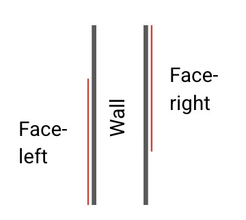

- How do we work with geometry?
- Example: Inferring smokedamper locations in BIM-model
We work with detailed mesh geometries at a technical level, processing vertices, triangles, and other mesh-specific properties
We represent geometry as semantic entities in the knowledge graph, capturing high-level properties and relationships without the complexity of mesh-level details
Problem:
Can we automatically determine where smokedampers should be placed (where firesections changes)?
Can we infer firesection change across walls between different rooms?
Can we establish relationships between overlapping spaceboundaries accross space-separating walls?
Approach: Spaceboundary pairing
